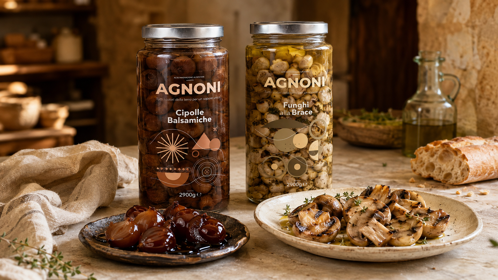
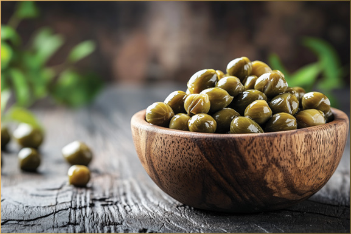
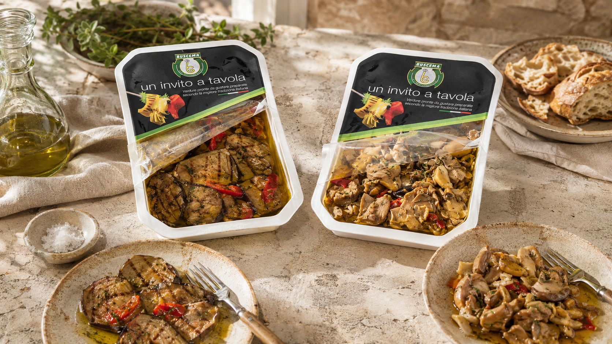
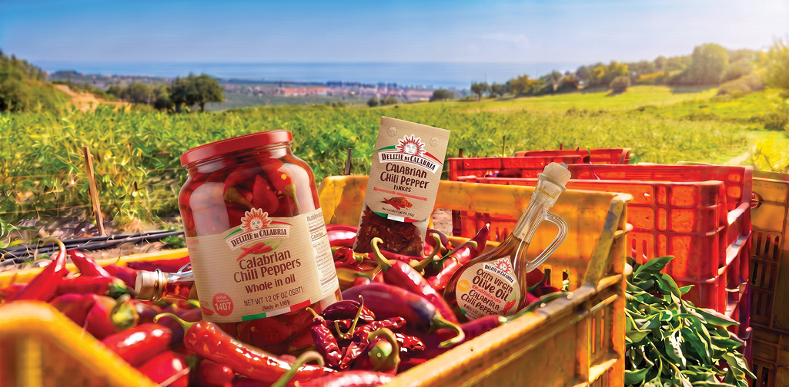

From tender artichokes and roasted peppers to sun-dried tomatoes and distinctive antipasti, our collection brings authentic flavor, vibrant color, and exceptional convenience to the professional kitchen.
Explore the Collection
Prime Line Distributors sources a distinctive selection of preserved vegetables and Mediterranean specialties chosen for their flavor, consistency, and presentation.
From everyday essentials to harder-to-find delicacies, our portfolio helps chefs create memorable dishes without compromising quality.
Tender, flavorful and remarkably versatile—from antipasti and salads to pizzas, pastas and signature entrées.
Fiery Calabrian chilies, sun-ripened and hand-harvested for bold, authentic heat.

Hand-harvested on Pantelleria, off the southern coast of Italy — prized for their delicate texture and briny, aromatic flavor.
Roasted and grilled over open flame, then rested in oil to develop deep, smoky sweetness — this is antipasto the way Sicilian kitchens have always made it.
Our selection includes artichokes, eggplants, mixed mushrooms, peppers, tomatoes and zucchini, each prepared to be ready for the table in minutes.
Discover Our Antipasto Selection
Our assortment spans the full range of Mediterranean preserved vegetables — tender artichokes and hearts, sweet and hot peppers roasted or stuffed, giardiniera and cornichons, capers in salt or oil, sun-dried and semi-dried tomatoes, marinated grape leaves and specialty accompaniments like hearts of palm and preserved lemons. Every item is chosen for consistent quality, practical formats and the authentic flavor chefs expect from true Mediterranean sourcing.
Products chosen for authentic flavor, texture and visual appeal.
Practical formats created for consistency and efficiency.
Classic Mediterranean staples and specialty ingredients from trusted producers.

From sun-drenched hillsides overlooking the Ionian coast, our Calabrian chili peppers are hand-harvested at their peak and prepared using time-honored methods — bringing fiery, authentic flavor to every dish.